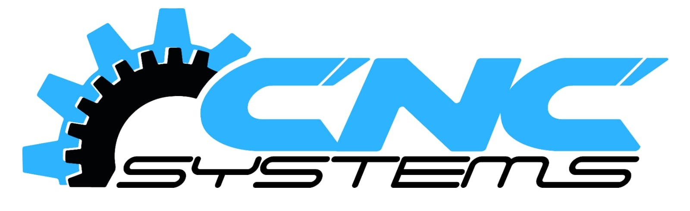

Instalación y puesta en marcha
Instalación, comprobaciones técnicas, puesta en marcha y soporte inicial de maquinaria CNC.
Ver servicio →
Mantenimiento, reparación, precisión, instalación y modernización de máquinas-herramienta para entornos industriales.
Ayudamos a empresas industriales a mantener la disponibilidad, precisión y productividad de sus máquinas CNC. Más de 35 años de experiencia en servicio técnico multimarca.
Una fábrica no depende de una única máquina. Cuando existen diferentes modelos, fabricantes y generaciones de controles, disponer de un soporte técnico multimarca puede simplificar el mantenimiento de todo el parque.
Nuestro objetivo no es simplemente reparar una avería. Es ayudar a mantener la disponibilidad, precisión y continuidad productiva de la maquinaria.
Hablar con un técnicoDesde la instalación y puesta en marcha hasta el mantenimiento, reparación, recuperación de precisión y modernización de equipos.
Instalación, comprobaciones técnicas, puesta en marcha y soporte inicial de maquinaria CNC.
Ver servicio →Mantenimiento preventivo y correctivo orientado a reducir paradas y mantener la disponibilidad de los equipos.
Ver servicio →Diagnóstico de averías y reparación de sistemas mecánicos, eléctricos, hidráulicos, neumáticos y CNC.
Ver servicio →Análisis y recuperación de la precisión de la máquina mediante comprobaciones geométricas y Ballbar.
Ver servicio →Actualización de máquinas CNC para prolongar su vida útil y adaptarlas a las necesidades actuales de producción.
Ver servicio →Servicio técnico independiente y multimarca para empresas que necesitan mantener operativa su maquinaria CNC.
Soluciones de mantenimiento, reparación y modernización adaptadas a entornos de fabricación industrial.
Máquinas CNC destinadas a producción continua y fabricación de componentes mecanizados.
Soporte técnico para empresas cuya actividad depende de mantener disponibles sus centros de mecanizado y tornos CNC.
Mantenimiento y soporte técnico de maquinaria instalada en entornos industriales.
Cuéntenos qué máquina tiene, qué problema presenta o qué necesita mejorar. Analizaremos la intervención técnica más adecuada.
Solicitar asistencia técnicaServicio técnico CNC multimarca en maquinaria y controles industriales.
Las marcas mencionadas pertenecen a sus respectivos propietarios. CNC Systems no es servicio técnico oficial de dichas marcas.